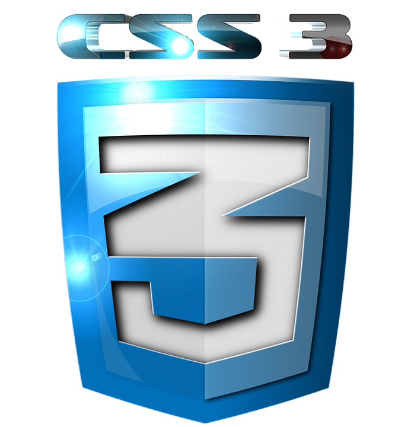

Build & Service Web presents

Cascading Style Sheets (CSS), stijlbladen, zijn een mogelijkheid om de vormgeving van webpagina's los te koppelen van hun feitelijke inhoud en centraal vast te leggen.
→ zie: Wikipedia CSS
→ zie: Website W3C CSS conventies
→ zie: Website W3C CSS colors
Met CSS kan de vormgeving van elk element in een webpagina worden bepaald. Een element van een webpagina wordt gedefinieerd door het gebruik van een HTML-tag. Een stijl bestaat uit een aantal aspecten zoals lettertype en voor- en achtergrondkleur.
Ook breedte van kantlijnen, de horizontale en verticale positie, de zichtbaarheid, de transparantie, of een element boven of onder een ander element ligt en vele andere aspecten kunnen in een stylesheet worden aangegeven.
Zie onderstaand tutorial CSS3: